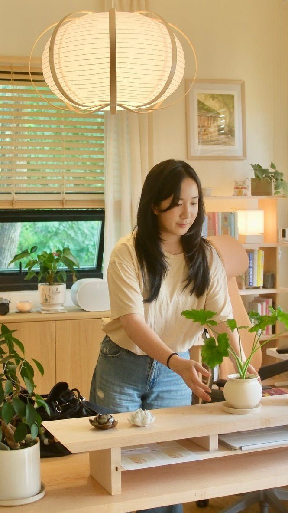
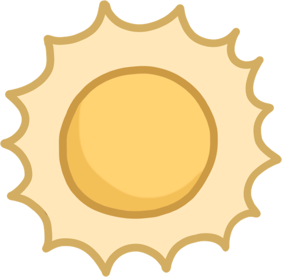
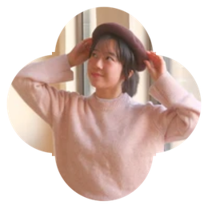
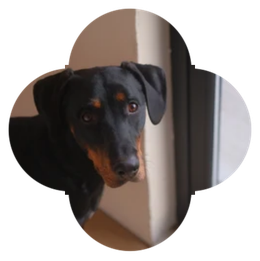

I make calm, warm spaces and share how on YouTube, so you can make one that feels like you.


Made together

“After all, the triangle is the strongest shape.”

and Buko, chief box destruction officerStay close
The cozy corners where I share the in-between moments.
With love, Maisy 💛
From our cozy home, to yoursYouTube · Instagram · TikTok · X · For brands and press · © Maisy Leigh